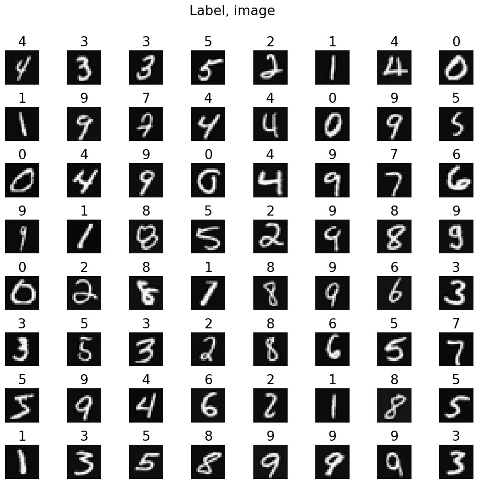
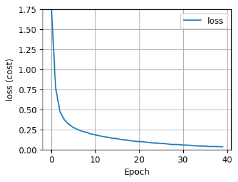
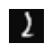

import numpy as np
import pandas as pd
import matplotlib.pyplot as plt
import tensorflow as tf
from tensorflow.keras.models import Sequential
from tensorflow.keras.layers import DenseHandwritten Digit Recognition
Handwritten digit classification with neural networks involves training a model to recognize digits from images. Using layers of interconnected nodes, the network learns to map pixel values to digit classes through training. This application is crucial for tasks like optical character recognition and digitizing handwritten documents.
Import Libraries
Dataset
X = np.load("data/X.npy")
y = np.load("data/y.npy")print('The shape of X is:', (X.shape))
print('The shape of y is:', (y.shape))
print('The shape of X[0] is:', (X[0].shape))
print('Value of y[0] is:', y[0])The shape of X is: (5000, 400)
The shape of y is: (5000, 1)
The shape of X[0] is: (400,)
Value of y[0] is: [0]m, n = X.shape
fig, axes = plt.subplots(8, 8, figsize=(10, 10))
fig.tight_layout(rect=[0, 0.0, 1, 0.91])
for i, ax in enumerate(axes.flat):
random_index = np.random.randint(m)
X_random_reshaped = X[random_index].reshape((20, 20)).T
ax.imshow(X_random_reshaped, cmap='gray')
ax.set_title(y[random_index, 0], fontsize=19)
ax.set_axis_off()
fig.suptitle("Label, image", fontsize=19)
Model
tf.random.set_seed(1234)
model = Sequential(
[
tf.keras.Input(shape=(400,)),
Dense(units=25, activation='relu', name='L1'),
Dense(units=15, activation='relu', name='L2'),
Dense(units=10, activation='linear', name='L3'),
], name="my_model"
)WARNING:tensorflow:From C:\Users\vrajs\AppData\Local\Packages\PythonSoftwareFoundation.Python.3.10_qbz5n2kfra8p0\LocalCache\local-packages\Python310\site-packages\keras\src\backend.py:1398: The name tf.executing_eagerly_outside_functions is deprecated. Please use tf.compat.v1.executing_eagerly_outside_functions instead.
model.summary()Model: "my_model"
_________________________________________________________________
Layer (type) Output Shape Param #
=================================================================
L1 (Dense) (None, 25) 10025
L2 (Dense) (None, 15) 390
L3 (Dense) (None, 10) 160
=================================================================
Total params: 10575 (41.31 KB)
Trainable params: 10575 (41.31 KB)
Non-trainable params: 0 (0.00 Byte)
_________________________________________________________________[layer1, layer2, layer3] = model.layers
W1, b1 = layer1.get_weights()
W2, b2 = layer2.get_weights()
W3, b3 = layer3.get_weights()
print(f"W1 shape = {W1.shape}, b1 shape = {b1.shape}")
print(f"W2 shape = {W2.shape}, b2 shape = {b2.shape}")
print(f"W3 shape = {W3.shape}, b3 shape = {b3.shape}")W1 shape = (400, 25), b1 shape = (25,)
W2 shape = (25, 15), b2 shape = (15,)
W3 shape = (15, 10), b3 shape = (10,)model.compile(
loss=tf.keras.losses.SparseCategoricalCrossentropy(from_logits=True),
optimizer=tf.keras.optimizers.Adam(learning_rate=0.001),
)
history = model.fit(
X, y,
epochs=40
)Epoch 1/40
WARNING:tensorflow:From C:\Users\vrajs\AppData\Local\Packages\PythonSoftwareFoundation.Python.3.10_qbz5n2kfra8p0\LocalCache\local-packages\Python310\site-packages\keras\src\utils\tf_utils.py:492: The name tf.ragged.RaggedTensorValue is deprecated. Please use tf.compat.v1.ragged.RaggedTensorValue instead.
157/157 [==============================] - 1s 2ms/step - loss: 1.8278
Epoch 2/40
157/157 [==============================] - 0s 2ms/step - loss: 0.7689
Epoch 3/40
157/157 [==============================] - 0s 2ms/step - loss: 0.4704
Epoch 4/40
157/157 [==============================] - 0s 2ms/step - loss: 0.3696
Epoch 5/40
157/157 [==============================] - 0s 3ms/step - loss: 0.3148
Epoch 6/40
157/157 [==============================] - 0s 2ms/step - loss: 0.2759
Epoch 7/40
157/157 [==============================] - 0s 3ms/step - loss: 0.2503
Epoch 8/40
157/157 [==============================] - 0s 2ms/step - loss: 0.2280
Epoch 9/40
157/157 [==============================] - 0s 2ms/step - loss: 0.2137
Epoch 10/40
157/157 [==============================] - 0s 2ms/step - loss: 0.1947
Epoch 11/40
157/157 [==============================] - 0s 2ms/step - loss: 0.1841
Epoch 12/40
157/157 [==============================] - 0s 2ms/step - loss: 0.1706
Epoch 13/40
157/157 [==============================] - 0s 2ms/step - loss: 0.1608
Epoch 14/40
157/157 [==============================] - 0s 2ms/step - loss: 0.1508
Epoch 15/40
157/157 [==============================] - 0s 2ms/step - loss: 0.1410
Epoch 16/40
157/157 [==============================] - 0s 2ms/step - loss: 0.1352
Epoch 17/40
157/157 [==============================] - 0s 2ms/step - loss: 0.1246
Epoch 18/40
157/157 [==============================] - 0s 2ms/step - loss: 0.1189
Epoch 19/40
157/157 [==============================] - 0s 2ms/step - loss: 0.1104
Epoch 20/40
157/157 [==============================] - 0s 2ms/step - loss: 0.1043
Epoch 21/40
157/157 [==============================] - 0s 2ms/step - loss: 0.1003
Epoch 22/40
157/157 [==============================] - 0s 2ms/step - loss: 0.0953
Epoch 23/40
157/157 [==============================] - 0s 2ms/step - loss: 0.0896
Epoch 24/40
157/157 [==============================] - 0s 2ms/step - loss: 0.0839
Epoch 25/40
157/157 [==============================] - 0s 2ms/step - loss: 0.0800
Epoch 26/40
157/157 [==============================] - 0s 2ms/step - loss: 0.0758
Epoch 27/40
157/157 [==============================] - 0s 2ms/step - loss: 0.0725
Epoch 28/40
157/157 [==============================] - 0s 2ms/step - loss: 0.0666
Epoch 29/40
157/157 [==============================] - 0s 2ms/step - loss: 0.0636
Epoch 30/40
157/157 [==============================] - 0s 2ms/step - loss: 0.0614
Epoch 31/40
157/157 [==============================] - 0s 2ms/step - loss: 0.0561
Epoch 32/40
157/157 [==============================] - 0s 2ms/step - loss: 0.0547
Epoch 33/40
157/157 [==============================] - 0s 2ms/step - loss: 0.0511
Epoch 34/40
157/157 [==============================] - 0s 2ms/step - loss: 0.0467
Epoch 35/40
157/157 [==============================] - 0s 2ms/step - loss: 0.0444
Epoch 36/40
157/157 [==============================] - 0s 2ms/step - loss: 0.0434
Epoch 37/40
157/157 [==============================] - 0s 2ms/step - loss: 0.0380
Epoch 38/40
157/157 [==============================] - 0s 2ms/step - loss: 0.0375
Epoch 39/40
157/157 [==============================] - 0s 2ms/step - loss: 0.0365
Epoch 40/40
157/157 [==============================] - 0s 2ms/step - loss: 0.0330fig, ax = plt.subplots(1, 1, figsize=(4, 3))
ax.plot(history.history['loss'], label='loss')
ax.set_ylim([0, 1.75])
ax.set_xlabel('Epoch')
ax.set_ylabel('loss (cost)')
ax.legend()
ax.grid(True)
plt.show()
Prediction
X[1015] # This is an image of 2
fig, ax = plt.subplots(1, 1, figsize=(0.5, 0.5))
fig.tight_layout(rect=[0, 0.0, 1, 0.91])
X_reshaped = X[1015].reshape((20, 20)).T
ax.set_axis_off()
ax.imshow(X_reshaped, cmap='gray')
plt.show()C:\Users\vrajs\AppData\Local\Temp\ipykernel_18392\2281255842.py:3: UserWarning: Tight layout not applied. The left and right margins cannot be made large enough to accommodate all axes decorations.
fig.tight_layout(rect=[0, 0.0, 1, 0.91])
prediction = model.predict(X[1015].reshape(1, 400)) # prediction
print(f"Prediction: \n{prediction}")
print(f"Index: {np.argmax(prediction)}")1/1 [==============================] - 0s 94ms/step
Prediction:
[[-8.457523 1.3707368 4.68359 -2.3333073 -9.920081 -7.871964
-7.7648544 0.6922297 -5.3786387 -5.3329587]]
Index: 2prediction = model.predict(X)
yhat = np.argmax(prediction, axis=1)
doo = yhat != y[:, 0]
idxs = np.where(yhat != y[:, 0])[0]
print( f"{len(idxs)} errors out of {len(X)} images")
157/157 [==============================] - 0s 2ms/step
19 errors out of 5000 images